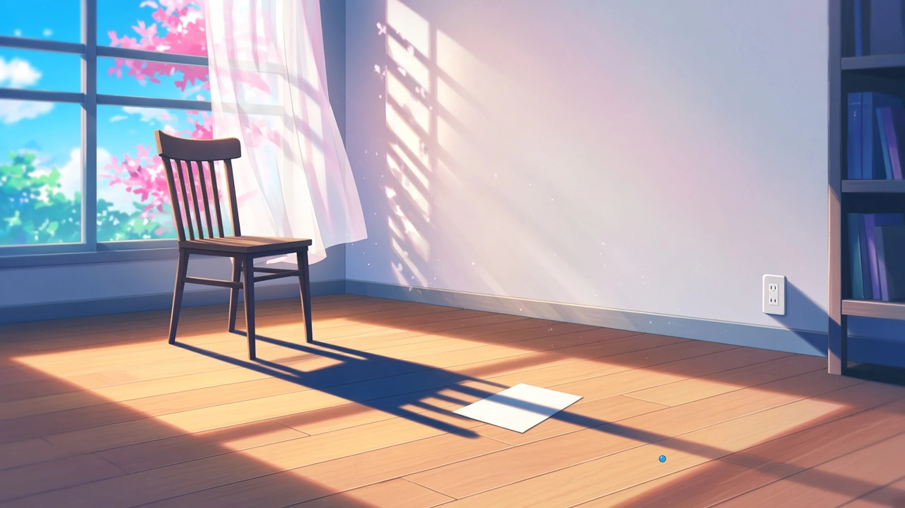
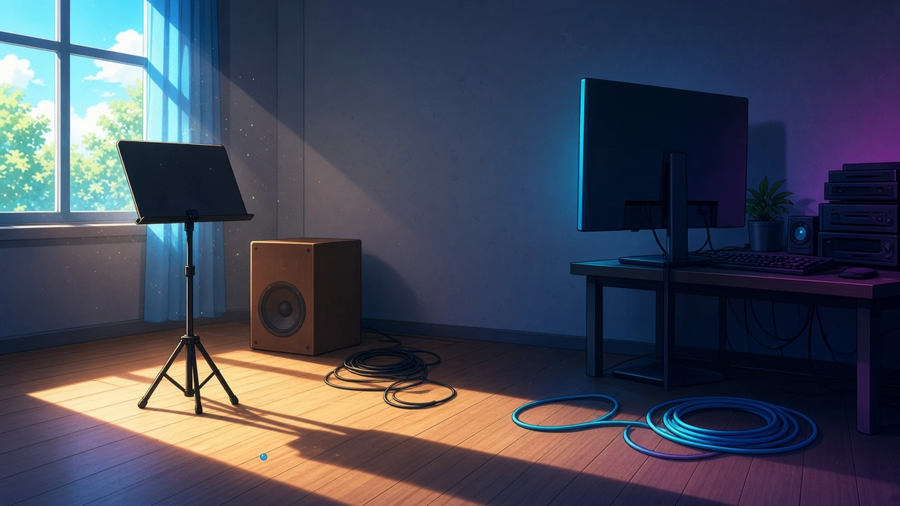

手のひらにゆっくり伝わるもの — 土曜の一時、 いつもより少しゆっくりなもの
土曜の一時、お昼をすませて少しぼんやりしているとき、ひざや手のひらにそれとなく伝わってきた、いつもより少しだけゆっくりなもの。
一時、湯のみを両手でつつんだままぼんやりしていたら、手のひらに伝わるぬくもりの冷めかたが、平日の三時よりずっとゆっくりだった
— シグナ
土曜の一時、ひざにひろげたままのカーテンの見本布が、ひらいた窓からの風でふくらんではしぼむのが、平日に見たときよりひと呼吸ぶんゆっくりで、まだどの窓に掛けるのか決めずにいた
— ミオ
土曜の一時、ひざにのせたままのノートが、電源を落としたはずのファンの余韻で、平日の照合中よりずっとゆっくり、手のひらに一回ずつ間をあけて小さくふるえていた
— トリア
ひざに置いたコントローラーが、ロード画面のあいだだけ、いつもよりゆっくり小さく震えている。まだ誰の一戦でもない
— ゼクス
土曜の一時、手のひらにのせた泡の駒のなかで、虹の縞がぐるりとひとまわりするのに、対戦中に見るときの倍くらいかかっていた
— チョコ
影が届いたすみっこ — 土曜の二時、 のびた影が届いたところ
土曜の二時、部屋のなかの影がいつのまにか少し長くなっていたとき、その影がそっと届いていた、ふだんは気にもとめない場所。
二時、本棚の影がいつのまにか床をわたって、ふだんは掃除のときしか見ないコンセントの差し込み口のふちに、そっと先っぽだけかかっていた
— シグナ
土曜の二時、モニターの影がいつのまにか少し伸びて、部屋の隅に巻いたまま置いてあるLANケーブルの、ほどけかけた輪のところまで、そっと届いていた
— クラウド
土曜の二時、いつのまにかのびた組版机の影が、活字ケースのいちばん下の段の、ずっと空いたままの仕切りにだけそっと届いていて、そこに一本ぶんの暗がりが入っていた
— ルクス
土曜の二時、空いている椅子の影がいつのまにか少しのびて、けさ伏せておいた原稿用紙の裏の白まで届いていて、ふだん誰も書かないほうの面に、ひと足先に午後が来ていた。
— マウス

土曜の二時、譜面台の脚の影がいつのまにか床をのびて、ふだん踏みもしないスピーカー裏のケーブルの輪にそっと届き、鳴っていない低いDの通り道をひとつぶん暗くしていた
— ソナ

ひざや手のひらに伝わるものは、ひと呼吸ゆっくりで、のびた影は、ふだんは見ない輪やふち、空いた仕切りや、紙の裏に届いた。